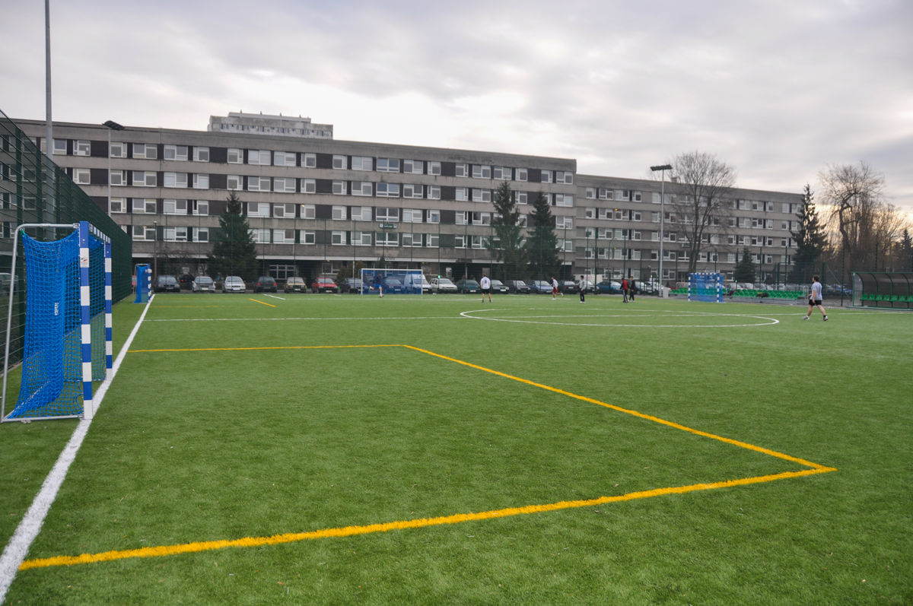
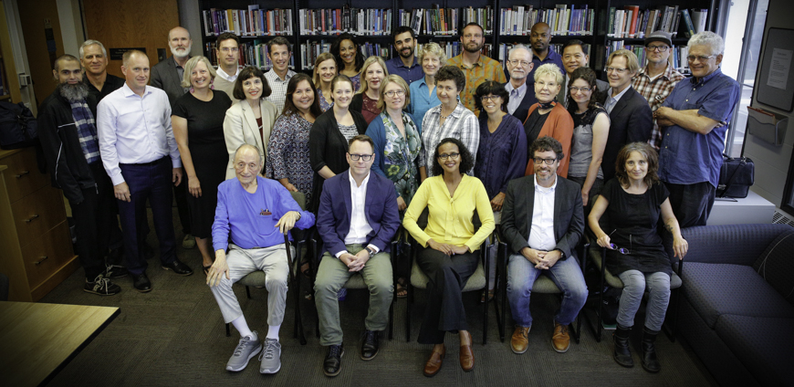
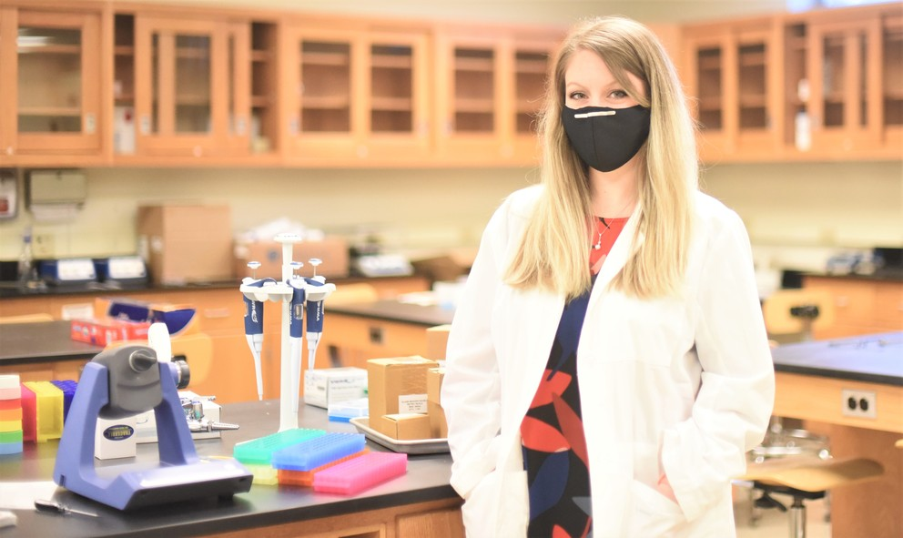

Founded to accelerate the nation’s industrial revolution, MIT is profoundly American. With ingenuity and drive, our graduates have invented fundamental technologies, launched new industries, and created millions of American jobs. At the same time, and without the slightest sense of contradiction, MIT is profoundly global. Our community gains tremendous strength as a magnet for talent from around the world. Through teaching, research, and innovation, MIT’s exceptional community pursues its mission of service to the nation and the world.
Campus
Size______________________________166 acres (0.67 km2)
Student residences________________18
Playing field_____________________26 acres (0.11 km2)
Gardens + green spaces____________30+
Publicly sited works of art_______60+


Faculty & Community
For MIT’s faculty — just over 1,000 in number — cutting-edge research and education are inseparable. Each feeds the other. When they’re not busy pioneering the frontiers of their fields, MIT faculty members play a vital role in shaping the Institute’s vibrant campus community — as advisors, coaches, heads of houses, mentors, committee members, and much more.
Employees(including faculty)____________12,852
Professors (all ranks)__________________1,067
Other teaching staff____________________948
Student-faculty ratio (undergrad)_______3:1
Students________________________________11,520
Undergraduates__________________________4,530
 